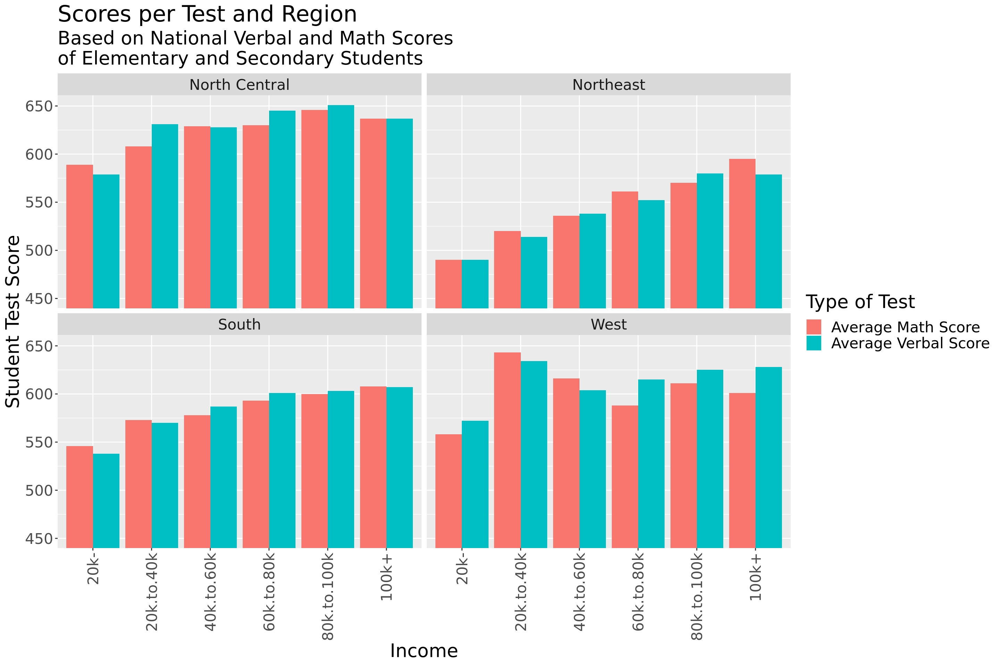

Rows: 577 Columns: 99
── Column specification ────────────────────────────────────────────────────────
Delimiter: ","
chr (2): State.Code, State.Name
dbl (97): Year, Total.Math, Total.Test-takers, Total.Verbal, Academic Subjec...
ℹ Use `spec()` to retrieve the full column specification for this data.
ℹ Specify the column types or set `show_col_types = FALSE` to quiet this message.Household Income on School Performance - Public Elementary and Secondary US
Report
Introduction and Data
This data comes from the Common Core of Data (CCD)(Education. 2023), which is the Department of Education’s primary database on public elementary and secondary education in the US. This is a comprehensive, annual, national database. Austin Cory Bart is the individual who pulled public data from CCD and created the dataset that was published on October 24, 2016. The dataset consists of information on over 575 students’ average GPA per subject, SAT and subject test scores, state of residency, and family income, per year. There is a concern that this data can create misguided conclusions and perpetuate stereotypes and misconceptions based on academic scores and socioeconomic status.
Research question
How does average household income affect US students’ development in each school subject between the years of 2005 and 2015?
Motivation
It is important to know how financial status is affecting students and the new generation. The country can then take steps to work towards improving education for all if there is a problem found. Economic status should not negatively impact children and their ability to get a proper education and succeed in the world. Education is very important as it creates not only a better society with well informed citizens, but also allows for students to later get better paying jobs and create a strong workforce.
Method of Analysis
The research will use the average math and verbal scores of students per year who reported that their family income was in certain income brackets. Those income brackets range from less than 20k, 20-40k, 40-60k, 60-80k, 80-100k, and more than 100k. A negative or positive correlation can then be analyzed. The variables are average math score, average verbal scores, and family income bracket. The average math and verbal scores are quantitative variables. The family income bracket is a categorical variable. If state and year are also later analyzed, they are also both categorical variables. We are including a new categorical variable of “region” based on states to control this variable.
Hypothesis
The hypothesis is that students with a household income below the median of 60k will have lower math and verbal scores on average than their counterparts with family incomes higher than 60k. This may be because they likely have more resources to strengthen their academic skills such as private tutoring, a stress-free home environment, and parents who have achieved higher education; however, we cannot confirm that there is a causal relationship from this data.
Data Glimpse
Edited Data
Here, we select variables from the data associated with our research question. We only selected variables concerning the average math and verbal scores of students whose reported family income was less than 20k, 20k-40k, 40k-60k, 60k-80k, 80k-100k, and greater than 100k, respectively. Filtering this data allows us to better look at the relationship among these variables.
Addition of the Region Variable
# A tibble: 10 × 14
state average.math.score_2…¹ average.verbal.score…² average.math.score_4…³
<chr> <dbl> <dbl> <dbl>
1 Alabama 513 527 539
2 Alaska 492 500 517
3 Arizona 498 495 520
4 Arkansas 513 526 543
5 Califor… 477 458 506
6 Colorado 533 535 543
7 Connect… 463 467 493
8 Delaware 449 454 481
9 Florida 471 473 492
10 Georgia 459 462 482
# ℹ abbreviated names: ¹average.math.score_20k.to.40k,
# ²average.verbal.score_20k.to.40k, ³average.math.score_40k.to.60k
# ℹ 10 more variables: average.verbal.score_40k.to.60k <dbl>,
# average.math.score_60k.to.80k <dbl>, average.verbal.score_60k.to.80k <dbl>,
# average.math.score_80k.to.100k <dbl>,
# average.verbal.score_80k.to.100k <dbl>, `average.math.score_100k+` <dbl>,
# `average.verbal.score_100k+` <dbl>, `average.math.score_20k-` <dbl>, …Literature Review
Despite education being viewed as an equalizer in society, many studies in recent years have highlighted a widening education gap depending on affluence and household income. While the educational gap based on race has shrunk since the 60s, imbalance in college completion and test scores has grown by 40% since the 60s.(Reardon 2018) There are many factors that contribute to this increasing gap in education including differences in resources, time, and other high-stress variables.
Our research question builds on the article’s focus on the recent discovery that income levels affect education. Rather than focusing on college completion or overall test scores, we will focus on specific school subjects and how they differ based on income levels.
Methodology
Longer Pivot
Figure 1: Barchart of State by Income with Type of Test and Region

We used a barchart due to the variables we were analyzing and the relationships we wanted to assess. For a barchart, we could facet into different regions, compare the categorical variable of income with the quantitative variable of average score, and furthermore differentiate between verbal and math scores using “fill”. Our new variable, Region.Name, allowed us to facet this - we created this variable above with each state in their respective region and joined it with our dataset.
Figure 2: Ridgeline of Score vs Income
Picking joint bandwidth of 7.47
Figure 3: Ridgeline of Score vs Income with Type of Test
Picking joint bandwidth of 8.55
We chose to use a ridgeline model because it’s easy to interpret the different distributions of scores per income category. We can also see general trends in frequency and range of scores through the ridgeline model. It is easier to see the highest frequency (highest peak) of scores per income level than if we had used a boxplot.
Figure 4: Linear Regression of Income and Region on Score
# A tibble: 9 × 5
term estimate std.error statistic p.value
<chr> <dbl> <dbl> <dbl> <dbl>
1 (Intercept) 498. 1.50 332. 0
2 Income20k.to.40k 41.4 1.72 24.1 6.13e-123
3 Income40k.to.60k 63.2 1.72 36.8 1.61e-269
4 Income60k.to.80k 73.7 1.72 42.9 0
5 Income80k.to.100k 84.8 1.72 49.3 0
6 Income100k+ 102. 1.72 59.5 0
7 Region.NameNortheast -57.3 1.54 -37.1 4.61e-274
8 Region.NameSouth -42.3 1.34 -31.6 1.17e-203
9 Region.NameWest -37.9 1.40 -27.0 2.04e-152Figure 5: Linear Regression Equation
\[ \widehat{score} = 497.91 + 41.4*Income.20k.to.40k + 63.22*Income.40k.to.60k \\ + 73.72*Income.60k.to.80k + 84.77*Income.80k.to.100k \\ + 102.21*Income.+100k - 57.33*Northeast \\ - 42.3*South - 37.86*West \]
Analysis of Figures 1-4
Upon analyzing the first visualization there appears to be a positive correlation between household income and national math and verbal scores of elementary and secondary students. This graph uses a combination of both math and verbal scores to show a general trend between academics and household income, regardless of subject. Using the density ridges plot, allows the graph to show the frequency of each test score. The students with a household income of 20k showed the highest frequency of test scores at about 425 while students with a household income of 100k+ had the highest frequency of test scores at about 550. This visualization showed a positive linear correlation between the two variables.
The second visualization was created to allow distinction between regions and the test academic subjects, therefore introducing region as a new variable. This graph provides more insight into if geographic location affects the relationship between average test scores and household income. The results showed that the South and Northeast showed a more positive linear correlation between the two variables, while the North Central and West regions showed more variability yet a slight positive correlation as well.
Justification for Regression Model Selection and Analysis of Linear Regression Equation
We decided to use the additive linear regression model rather than the interactive linear regression model because we wanted to be able to isolate the relationship of family income on score versus region on score. Additionally, a linear model is used when a response variable is quantitative (which ours is), while logistic is used when a response variable is categorical. If we hold region constant, a student with a family income of 20-40k can expect an on average 41 point increase in score above the baseline, which is the on average score of a student with a family income of less than 20k. Students with a family income of 40-60k can expect a 63 point increase on average above the less than 20k students. This trend of higher scores on average continues as family income increases. Keeping income constant, students from the Northeast region score 57 less points on average than students from the Northcentral region (baseline region). South region students score 42 points less on average than Northcentral students, and West students score 38 points less on average than Northcentral students.
The pattern of an increase in score coinciding with an increase in family income lends significance to our hypothesis that family income affects students’ scores, specifically that students with a higher family income on average score higher. The regions finding appear to have a significance, but we do not know enough about regional education relationships to interpret this significance. The linear regression clearly points to the Northcentral students as the highest scorers on average, with West students on average scoring the second highest, South as the third lowest on average, and North east as the overall lowest on average.
AIC Analysis of Potential Regression Models
parsnip model object
Call:
stats::lm(formula = Score ~ 1, data = data)
Coefficients:
(Intercept)
525.1 type_of_test aic
1 Control AIC 71547.95
2 Basic Linear 68720.25
3 Additive Type of Test 68717.52
4 Additive Region 67264.20
5 Interactive Type of Test 68723.34
6 Interactive Region 67182.58
7 Interactive Both 67208.83
8 Additive Both 67260.30Justification for Choice of AIC Over R Squared
We decided to use AIC, a measure of likelihood (how well a model fits the data), rather than R squared because AIC penalizes the addition of new predictors while R^2 rewards (sometimes artificially) the addition of new variables, no matter how related to the topic those variables are. Since we have worked with models that artificially inflate R squared scores when more variables are added and we knew we wanted to add additional variables to the model, we decided to veer away from the R squared model and try AIC. Because the equation to determine AIC has a negative before the log likelihood, lower AIC values are indicative of better model fits. Based on our forward selection analysis, the best model fit is an interactive model using the explanatory variables of region and score and exclusing the variable of type of test. Because adding type of test as an additional variable in our linear models leaves us with a higher AIC, ultimately we’ve decided not to create different graphs isolating reading or math scores.
Hypothesis Test
Data for Hypothesis
Rows: 6,576
Columns: 6
Groups: versus_median [2]
$ state <chr> "Alabama", "Alabama", "Alabama", "Alabama", "Alabama", …
$ Region.Name <chr> "South", "South", "South", "South", "South", "South", "…
$ `Type of Test` <chr> "average.math.score", "average.verbal.score", "average.…
$ Income <fct> 20k.to.40k, 20k.to.40k, 40k.to.60k, 40k.to.60k, 60k.to.…
$ Score <dbl> 513, 527, 539, 551, 550, 564, 566, 577, 588, 590, 462, …
$ versus_median <chr> "Less", "Less", "Less", "Less", "Greater", "Greater", "…`stat_bin()` using `bins = 30`. Pick better value with `binwidth`.
Warning: Please be cautious in reporting a p-value of 0. This result is an
approximation based on the number of `reps` chosen in the `generate()` step.
See `?get_p_value()` for more information.# A tibble: 1 × 1
p_value
<dbl>
1 0We have conducted a hypothesis test in order to determine whether we can fail to reject the null hypothesis that the true mean score for students with family incomes less than 60k is equal to the true mean score for students with family incomes greater than 60k. Through visualizations, it appears as though there is a trend towards a difference between true mean scores of students with family incomes less than 60k versus greater than 60k, but we conduct a hypothesis test in order to assess whether our sample mean is an unusual observation under the assumption of the null hypothesis. Since it is (and the p-value is significantly small), we can then reject the null hypothesis.
Decision: With a very small p-value, we reject the null hypothesis that the true mean score for students with family incomes less than 60k is equal to the true mean score for students with family incomes greater than 60k.
Conclusion: We have strong evidence to conclude that the true mean score for students with family incomes less than 60k is not equal to the true mean score for students with family incomes greater than 60k.
Results
Overall, these two visualizations and the linear regression model as well as our hypothesis test and significantly small p-value support the idea that average household income affects a student’s development in school.
The visual outputs from our two visualizations align with the output from out additive linear regression model. For example: for region, the facet of Northcentral has higher scores in the bar graph while Northcentral on average has the highest scores in the linear regression model. There was a clear positive trend between family income and score in our ridgeline model which was reflected in the positive trend between higher scores on average and an increase in family income in the linear regression model.
As the average household income increased so did the average verbal and math scores, regardless of region. There appears to be a significance in the pattern of data that falls in line with our hypothesis since both visualizations and our model showed that students with a household income below the median of 60k had on average lower math and verbal scores than families above the median. These students are more likely to have socioeconomic factors that impact their development in school. However, it can be assessed as to how generalizeable this data can be for the public as there was no information provided as to how this data was collected, it can not be confirmed if random sampling was used.
Discussion
We can reject the null hypothesis that the true mean of scores of students that come from lower income households (less than 60k) is equal to the true mean of scores of students that come from higher income households (greater than 60k). Furthermore, based on our figures including a bar chart and two ridgeline graphs, we have observed a trend towards a higher score when a student has a higher family income. Finally, it appears as though region has an impact on the strength of correlation between income and score, but that must be further exained. Our hypothesis test led us to fail to reject the null hypothesis, which corroborated our hypothesis and the observations we made of our visualizations and additive linear regression model.
Because education and testing is impacted by a variety of different factors that we were unable to control for, including variables like quality of school district, teacher skill, level of parental involvement, we are unable to determine a causal relationship between income and score. Additionally, we are assuming that the data is accurate and collected bias-free, which is something we cannot verify without a conversation with the scholars who collected the Department of Education Data.
We hope to build upon this research in the future in two ways: first, by controlling more variables to create a more accurate model and second, by exploring the relationship between region and score to a greater extent. We did not run a hypothesis test for the potential of a difference in score based on region or specifically one income level to another which could be a potential area for further research.
We could potentially control the additional variables that impact education by creating another dataset with more information about students, including their level of parental involvement in their education and the funding of their school.
References
Education., US Department of. 2023. “EDFacts Data Files: U.s. Department of Education.” In, 1–3. US Gov. https://doi.org/10.4324/9780429499821-33.
Reardon, Sean F. 2018. “The Widening Academic Achievement Gap Between the Rich and the Poor.” In, 177–89. Routledge. https://doi.org/10.4324/9780429499821-33.